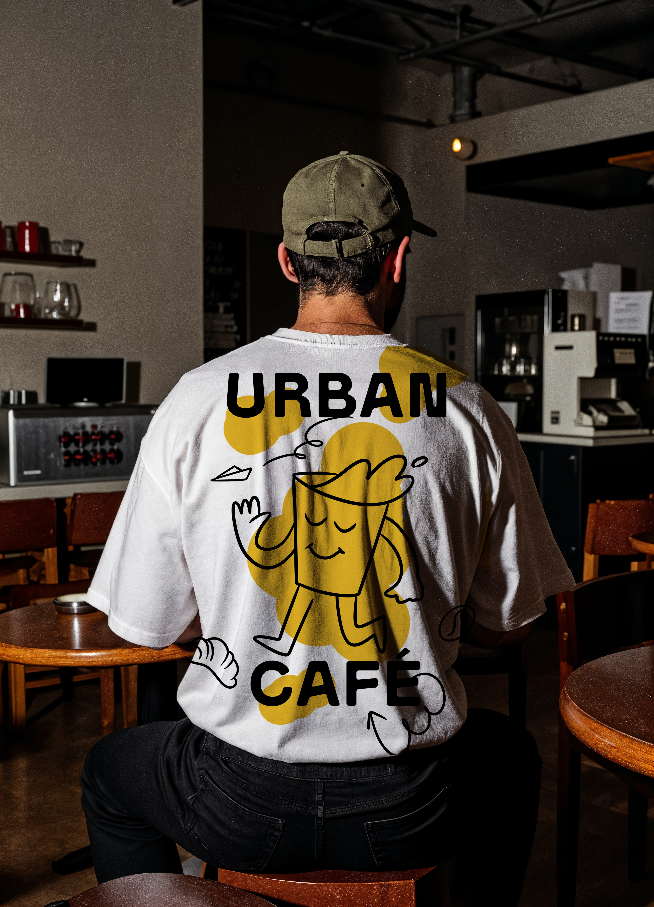
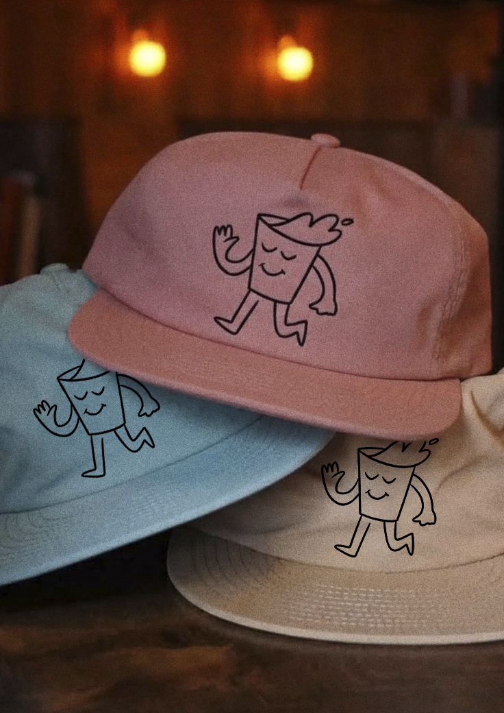
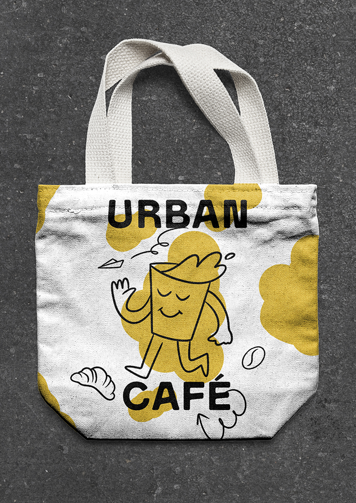
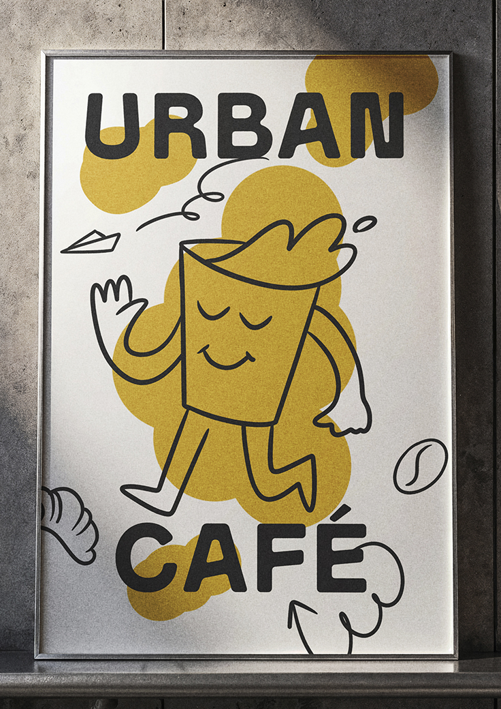

Merch Oficial
Hacé clic en cualquier imagen para verla en grande. Llevate la esencia de la ciudad a donde vayas.

Remera Oversize
Diseño urbano y comodidad esencial
Confeccionada en algodón pesado de alta calidad, corte amplio y estampa minimalista de la marca.

Gorros Urban
Tres colores a elección
Ideales para tus recorridos en bici o los días frescos en la ciudad. Disponibles en tonos versátiles.

Tote Bag
Resistente, práctica y sustentable
Lona de algodón crudo reforzada, perfecta para llevar tus libros, compu o las compras del día.

Cuadro Marco Metal
Arte y estética de la ciudad
Lámina en alta definición con marco metálico delgado, pensada para darle onda a cualquier espacio.